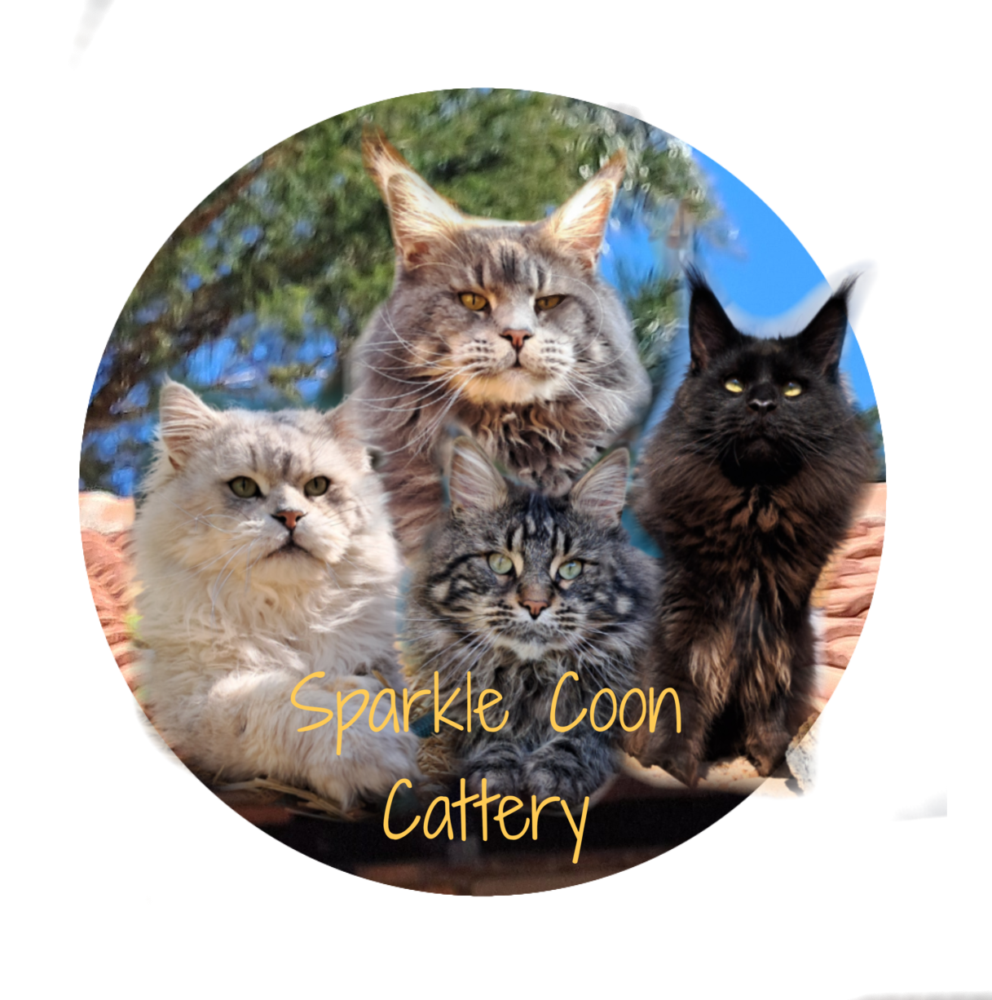
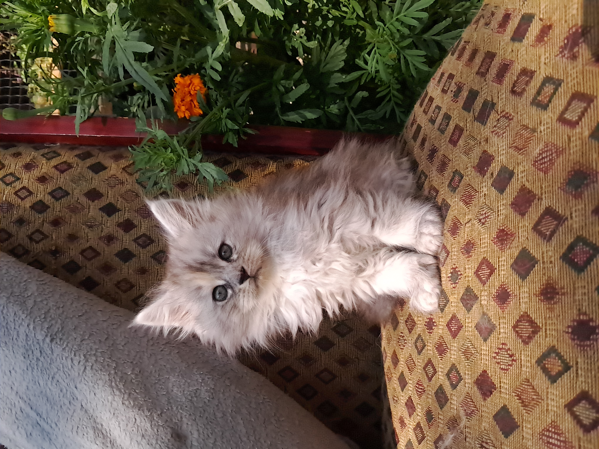

🔴 Currently CLOSED
This application form is not for a specific kitten or litter.
It is a general application to be considered for future available kittens.
Our application form opens periodically throughout the year, typically once or twice annually, depending on the number of kittens we expect.
Rather than operating a permanent waiting list, we open applications when we believe we will have kittens available in the coming months.
This allows us to keep our applicant list manageable and ensures everyone has a fair opportunity.
Last Updated: 1 September 2026
Every Sparkle Coon kitten is registered with the South African Cat Council (SACC) and comes with a 5-generation pedigree.
On collection day, we will show you your kitten's pedigree as proof of registration and lineage.
The original pedigree certificate will be released once we have received a photograph or scanned copy of your kitten's veterinary booklet, signed by your veterinarian, confirming that your kitten has been spayed or neutered in accordance with our contract.
Please see the Our History / About Us page for information regarding spay & neuter.
Introducing yourself is the first step! Here are our contact details (WhatsApp message Only)
Please find the relevant information below.
There are two ways to welcome a Sparkle Coon kitten into your family:
Our preferred process is to complete an application form.
Once approved, you will be contacted when a suitable kitten becomes available and given the opportunity to view and reserve your kitten before it is advertised publicly.
Occasionally, a kitten may become publicly available on our Facebook page, if the kitten has not been reserved through our application process.
These kittens are offered on a first-come, first-served basis and can be reserved without submitting an application beforehand.
In-person viewing or a video call is still mandatory.
We encourage all families to view their available kitten in person whenever possible.
If an in-person visit is not feasible, a video call is required.
Viewings are strictly by appointment only and are offered only after you have been given the opportunity to view a kitten that has become available for you.
We do not offer general cattery visits.
To minimise disruption to our cats and family life, all viewings take place on weekends only.
Whether in person or by video, this gives you the opportunity to meet your kitten, see their home environment, and meet the rest of our Maine Coons.
It also allows us to get to know one another, answer any questions, and make sure everyone is comfortable before your kitten joins your family.
When kittens become available, they are allocated in the following order of priority:
Our kittens are born and remain with their mother in our nursery, where they receive around-the-clock care and monitoring.
Graduate Owners are given the first opportunity to view and reserve available kittens.
If any kittens remain available, they are offered to our approved applicants.
This is the latest stage at which new owners should submit their kitten's chosen registered name.
We then submit the registration application for your kitten's SACC 5-generation pedigree.
Kittens attend their first veterinary appointment, where they receive their first vaccination, a general health examination, and flea treatment.
Provided your kitten is healthy, thriving, and has met all developmental milestones, they are ready to join their new family.
We do not require home inspections or photographs of your property.
However, we do ask that all Sparkle Coon kittens are provided with a safe, roam-free home.
This means your Maine Coon should be kept indoors and only allowed outside if they have access to a fully enclosed, escape-proof garden or a secure catio.
Keeping your Maine Coon safe from traffic, predators, disease, theft, and other outdoor hazards helps ensure they live a long, healthy, and happy life.
Already have a Sparkle Coon and would like another kitten?
We would love to welcome you back!
If you are interested in adding another Sparkle Coon kitten to your family, please contact Annelie van Vuuren and provide:
Annelie van Vuuren
082 495 7136 (WhatsApp preferred)
Once we have received the required information and everything is in order, you will be added to our Sparkle Coon Family List.
This list is reserved exclusively for previous Sparkle Coon owners and gives graduate families priority when future kittens become available.
We prefer that owners collect their kitten in person, as this allows for a smooth handover and gives you the opportunity to meet your kitten before taking them home.
If collecting your kitten in person is not possible, we are happy for our kittens to travel with a trusted pet courier service.
The owner is responsible for researching, selecting, booking, and paying the transport company directly.
Please note that additional costs may apply to prepare your kitten for travel.
These may include veterinary requirements, health documentation, or any other requirements specified by the transport company.
These costs are the responsibility of the owner.
We kindly ask that you research the transport process, courier company, and associated costs before contacting us about a kitten.
All Sparkle Coon kittens are sold as pet-only and must be spayed or neutered by their owner.
We do not practice Early Spay and Neuter (ESN), as we believe it is in the best interests of our kittens to be sterilised at a more appropriate age to support their growth and development.
Our sterilisation requirements are as follows:
Once your kitten has been sterilised, please send us a photograph or scanned copy of your kitten's veterinary booklet, signed by your veterinarian, as proof of sterilisation.
Once this has been received, your kitten's SACC 5-generation pedigree will be released to you.
All Sparkle Coon kittens are sold as pet-only. Breeding rights are not routinely offered and will only be considered under specific circumstances.
To be considered for breeding rights, the following requirements must be met:
We are always happy to answer questions and share our knowledge with new breeders.
However, we believe it is important to gain experience and establish a breeding program before introducing Sparkle Coon lines.
Please note that meeting these requirements does not guarantee that breeding rights will be granted. We reserve the right to decline any breeding enquiry at our sole discretion.
Website made by Michelle van Vuuren